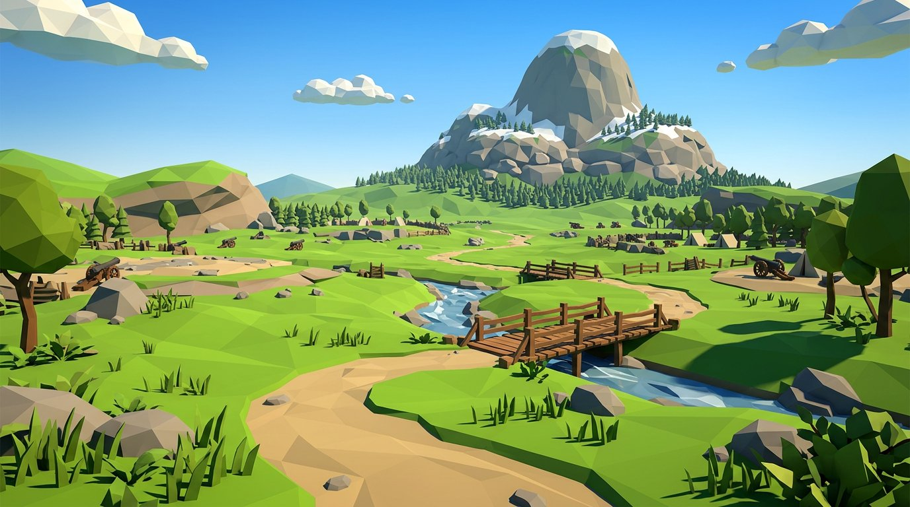
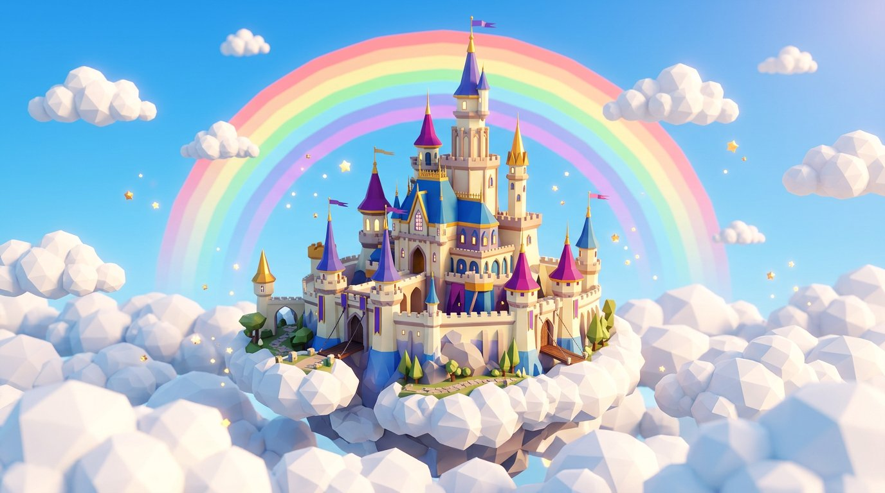
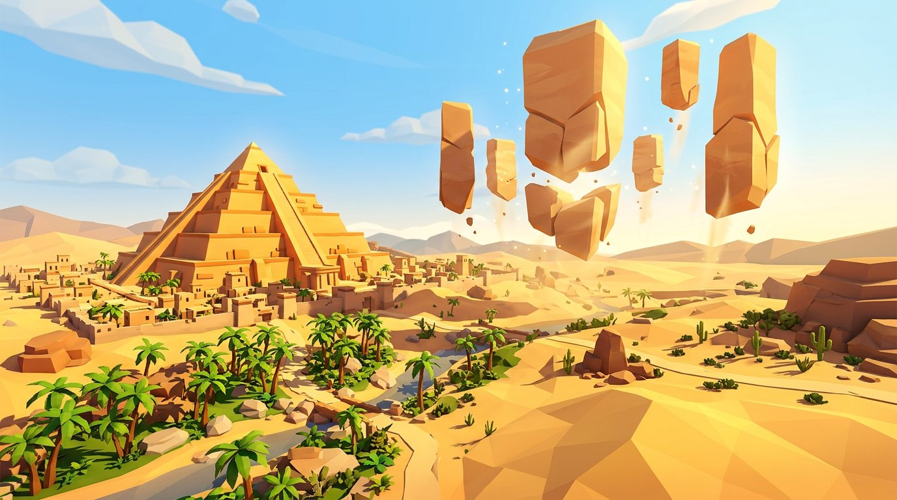
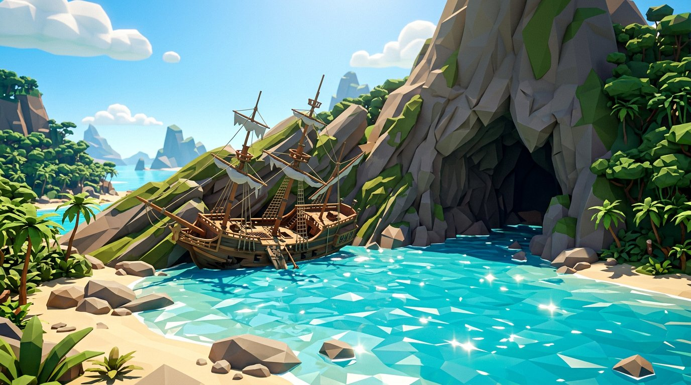
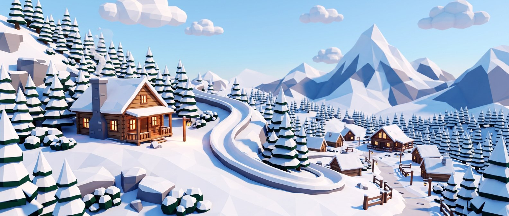
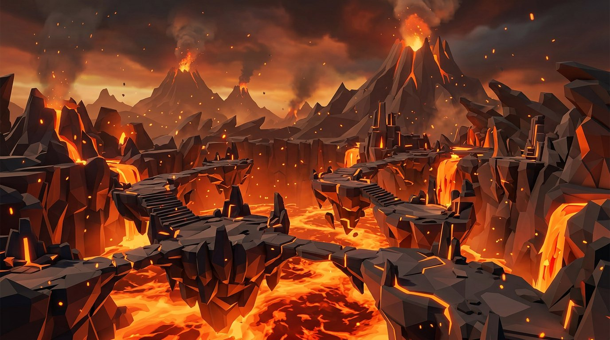
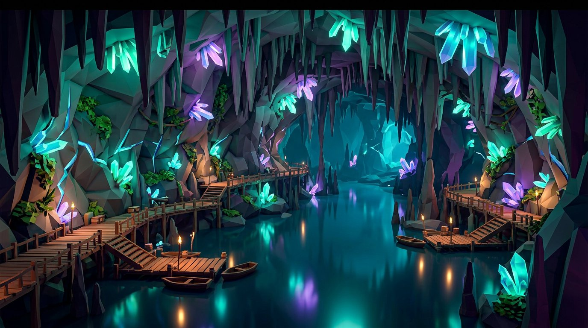
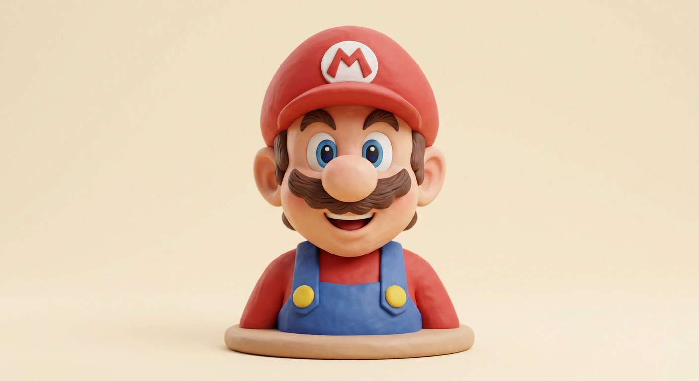
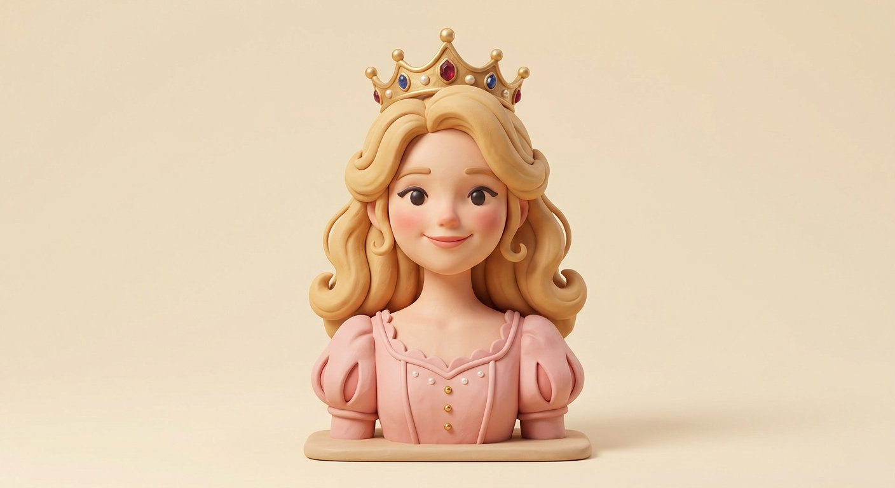
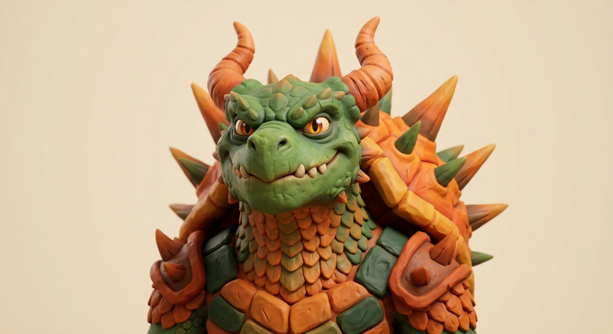

01 7 estrellasBob-omb Battlefield
Cañones, un puente de madera y un rey bomba que nunca aprende a rendirse.
El juego que nos enseñó a saltar en tres dimensiones. Un recorrido por el castillo, sus mundos y las 120 estrellas que definieron una generación.

01 Historia
En 1996, Nintendo no lanzó un juego en 3D: lanzó el manual de cómo se hace uno.
Super Mario 64 no llegó al 3D: lo fundó. Nintendo convirtió la tercera dimensión en un patio de juegos y enseñó a toda una industria a mirar hacia arriba.
Dirigido por Shigeru Miyamoto y desarrollado por Nintendo EAD, el juego puso a Mario en un castillo repleto de cuadros que eran, en realidad, puertas a otros mundos. La cámara se volvió un personaje más; el stick analógico, una extensión de la mano.
Con 120 Estrellas de Poder repartidas por cada rincón, cada salto era una pregunta y cada pared, una posible respuesta. El resultado: uno de los juegos más influyentes jamás hechos.
Ficha técnica
Llega a Japón el 23 de junio y a América en septiembre, junto al Nintendo 64. El 3D ya no volvería a ser el mismo.
Super Mario 64 DS trae a Luigi, Yoshi y Wario al castillo y añade 30 estrellas nuevas.
Super Mario 3D All-Stars lo recupera para una nueva generación, con su magia intacta.
Se sigue jugando, analizando y corriendo en speedruns. El castillo nunca cierra.
No era un nivel en 3D. Era un mundo entero esperando a que lo rompieras.
02 Mundos
Praderas, desiertos, bahías y lava. Seis de los cursos que todavía recordamos de memoria.

01 7 estrellasCañones, un puente de madera y un rey bomba que nunca aprende a rendirse.

02 7 estrellasBloques gigantes, un desierto dorado y la fortaleza del Rey Whomp.

03 7 estrellasUn galeón hundido, anguilas de mal humor y una cueva llena de tesoros.

04 7 estrellasUn pueblo nevado, un pingüino con prisa y la montaña rusa de hielo más traicionera.

05 7 estrellasPlataformas flotando sobre lava y un volcán que no perdona los errores.

06 7 estrellasUn lago subterráneo, niebla espesa y el laberinto más oscuro del castillo.
03 Sombreros
Cada sombrero abría una puerta que antes no existía. Y las Estrellas de Poder, 120 razones para volver a entrar.
Un triple salto y el cielo deja de ser un límite. Las alas te llevan donde el salto no alcanza.
Acero puro. Camina bajo el agua, rompe enemigos y olvídate del peligro.
Atraviesa muros, desvanece tu cuerpo y aparece donde nadie te espera.
La moneda del castillo. Cada estrella abre una puerta; todas juntas, el final.
04 Personajes
Tres razones por las que cada vuelta al castillo se siente como volver a casa.

El que salta, nada, vuela y nunca suelta una estrella. Si hay un techo, Mario ya está pensando cómo subir.

La invitación que empieza todo. Su castillo es el mapa y su voz, la brújula que guía a Mario.

Secuestra princesas, ruge más fuerte de lo que golpea y siempre, siempre vuelve.
05 Curiosidades
Rumores, trucos y detalles que se volvieron parte del mito.
Charles Martinet puso voz a Mario y convirtió «It's-a me, Mario!» en una de las frases más reconocibles de la historia de los videojuegos.
En el patio del castillo hay una placa con esa inscripción. Durante años alimentó la teoría de que Luigi estaba escondido en el juego. Sigue siendo un misterio.
Si no tienes suficientes estrellas, la escalera final se repite para siempre. Con 70 estrellas, el hechizo se rompe.
Super Mario 64 fue el juego que justificó el stick analógico del Nintendo 64. Antes, moverse en 3D era un acto de fe.
No hay mapa: el castillo funciona como hub y cada cuadro es un mundo. Perderse era parte del plan.
El backwards long jump dispara la velocidad de Mario y permite saltarse enormes partes del juego. Los speedrunners lo convirtieron en arte.
Mira bien: brillan en los rincones menos esperados. Haz clic en ellas y suma las cinco. Cuando termines, el castillo te lo va a agradecer.